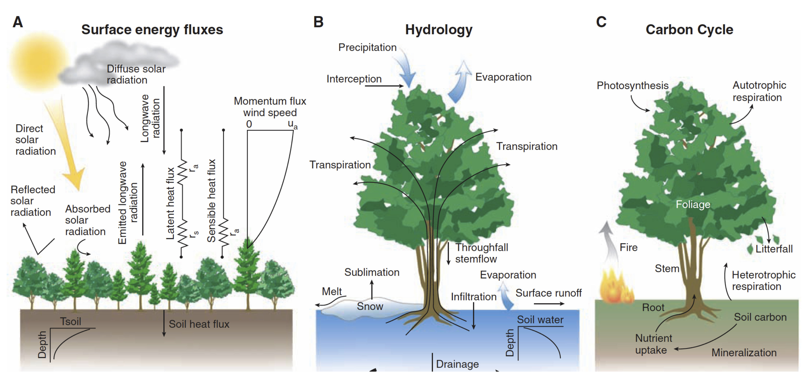
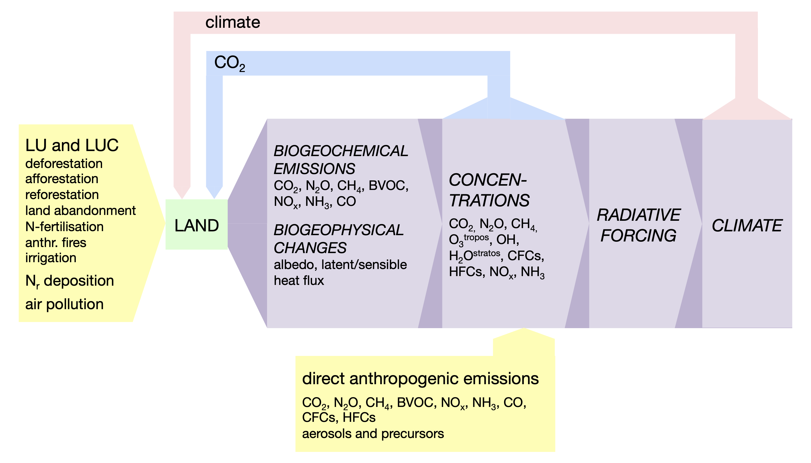
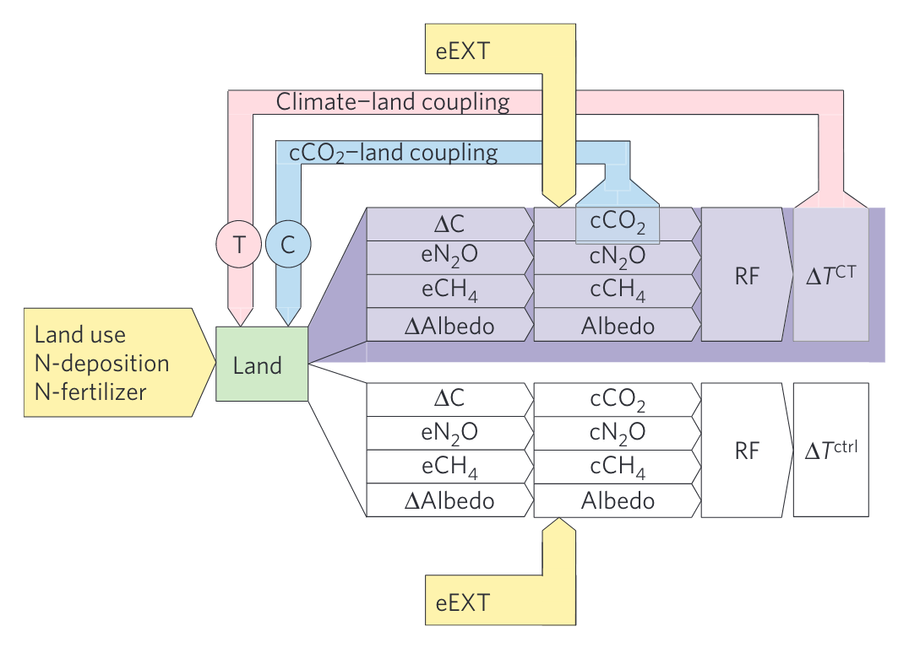
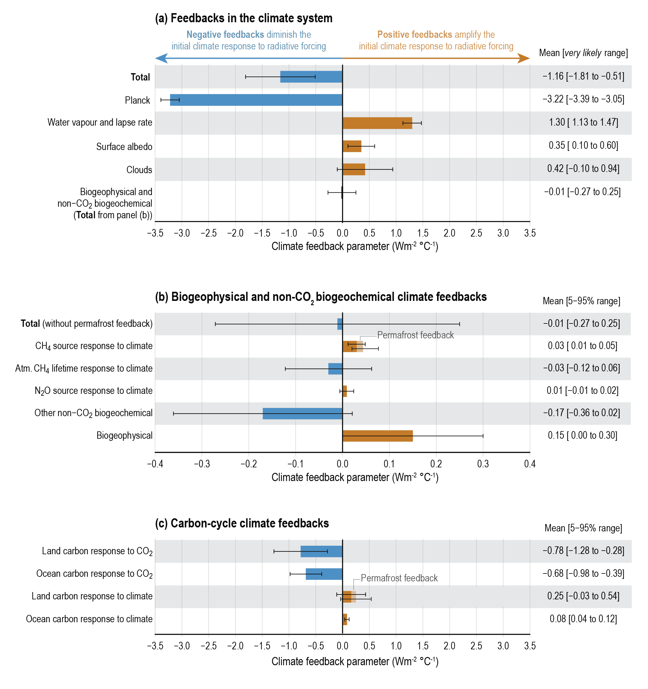

9 Earth system feedbacks
9.1 Land as an element in the Earth system
The Earth system can be regarded as a coupled system in which its elements (atmosphere, ocean, cryosphere, biosphere, lithosphere) interact on various time scales. A primary goal of Earth System research is to understand the interactions occurring on time scales that are relevant for society in the context of anthropogenic climate change. It is now established with overwhelming evidence that anthropogenic CO2 emissions from the combustion of fossil fuels have caused a rise in atmospheric concentrations beyond levels reached over the past 800,000 years, and that this concentration increase is the dominant driver of climate change as observed over the last decades (Arias et al. 2021).
Any prediction of climate change in the coming decades, centuries and millennia relies on an understanding of the processes that are key to the following questions:
- How fast will anthropogenic CO2 emissions and other greenhouse gases accumulate in the atmosphere?
- How does the anthropogenic modification of the biosphere through land use change affect greenhouse gas emissions by land ecosystems, land-climate interactions, and the carbon cycle?
- What is the climate response to changes in atmospheric CO2 and other drivers?
- What mechanisms does the rise in CO2 and the change in climate set in motion and how do they feed back to climate change?
The land carbon cycle, emissions of several greenhouse gases, and various land surface properties respond to a changing climate and atmospheric CO2. The processes responsible for the climate and CO2 effect on land ecosystems were introduced in Part I of this book. For example, rising CO2 has a fertilising effect on photosynthesis (Section 4.3.5). Rising temperatures accelerate respiration by autotrophs (e.g, plants) and heterotrophs (e.g., microbes and fungi) (Chapter 5) and may shift photosynthesis beyond its temperature optimum (Section 4.3.6). Increasing temperatures drive water loss through evapotranspiration and, potentially aggravated by reduced precipitation, can reduce root zone water availability and induce hydraulic stress in plants (Section 8.4), reduced CO2 uptake by photosynthesis (Section 4.4), and can trigger tree mortality.
The climate and CO2-driven responses of land ecosystems and land surface processes affect the C balance of the terrestrial biosphere (its net biome productivity, Section 5.1.7) and, through altered surface properties, land-climate interactions, e.g., through altered albedo and conductance to land-atmosphere water vapor fluxes (Chapter 7). While Part I of this book introduced the processes by which climate and CO2 affect the terrestrial biosphere, the land carbon cycle and land-climate interactions, Part II looks at how this affects the climate system. In addition to the focus on C, energy, and water, Part II extends the scope to the nitrogen (N) cycle, how it affects the C cycle and how emissions of the important greenhouse-gas N2O are controlled. Methane (CH4), an even stronger contributor to climate change than N2O, also has major sources in land ecosystems. Wetlands and fire are natural sources of CH4 and respond sensitively to climate change. Because greenhouse gases and land surface properties affect climate and are affected by it, feedbacks arise.
Note
A feedback arises when the output to a process triggers an amplification (positive feedback) or an attenuation (negative feedback) of the initial input.

Greenhouse gas emissions from land ecosystems and modifications of land-climate interactions are also the response of a direct anthropogenic forcing that would arise also in absence of changes in climate and CO2. For example, deforestation leads to a loss of C stored in biomass (and respective CO2 emissions) and to a modification of the surface radiation balance (Bala et al. 2007), nitrogen fertiliser inputs drive enhanced nitrous oxide (N2O) emissions (Galloway et al. 2004), and wetland drainage leads to C loss from soils and associated CO2 emissions, but also reduces CH4 emissions (Fluet-Chouinard et al. 2023). To complicate things, human alterations of the land surface and ecosystems also modify the feedbacks between terrestrial systems and climate. For example, deforestation reduces the capacity of the terrestrial biosphere to act as a C sink for anthropogenic CO2 emissions. These myriad interactions make the land an intricately coupled element of the Earth system and call for a conceptual framework and formalism for separating feedbacks and forcings and measuring their strengths.

9.2 The terrestrial biosphere in equilibrium
A useful staring point is to consider the terrestrial biosphere and the Earth system being in a dynamic equilibrium (Section 3.1). The terrestrial biosphere being in equilibrium with climate and atmospheric CO2 is an approximative concept often used as a description for its pre-industrial state. It is motivated by the finding that atmospheric CO2 (Siegenthaler et al. 2005; MacFarling Meure et al. 2006) and climate were remarkably stable during the pre-industrial Holocene (ca. 11 ka BP – 1750 AD) and that the terrestrial carbon (C) and nutrient balances and other ecosystem properties (greenhouse-gas emissions, surface energy and water exchange, see Figure 9.1) adjust to perturbations and re-equilibrate on time scales of decades to millennia. These time scales are determined by vegetation dynamics and related shifts in carbon and nutrient cycling (decades to centuries), and the relatively slow turnover times of soil organic matter pools (centuries to millennia). We learned about the dynamics of carbon cycling in ecosystems in Chapter 5.
The equilibrium concept implies that no net C fluxes occur between the terrestrial biosphere, the ocean and the atmosphere, and that all other properties remain constant. The relatively balanced state of the C cycle during the pre-industrial Holocene is remarkable in the view of the vast C reservoirs on land and the large gross exchange fluxes (Chapter 3). Globally, ca. 130 PgC yr-1 are assimilated by terrestrial photosynthesis (gross primary production, GPP), and ca. 60 PgC yr-1 are retained to assimilate vegetation biomass (net primary production, NPP). The vegetation C stock amounts to ca. 450 PgC and is turned over on time scales of years (grass, leaves) to decades (wood). Decomposed litter feeds soil C stocks (ca. 1700 PgC), where it is retained for centuries to millennia, and is ultimately respired back to the atmosphere as CO2 through heterotrophic respiration (Rh). Peatland C stocks (ca. 600 PgC, Yu et al. (2010)) have even longer lifetimes due to anaerobic soil conditions inhibiting decomposition. The turnover time (lifetime) of a given C reservoir determines its time scale of response to a perturbation (Section 5.2). Large C stocks are contained in permafrost soils (ca. 1200 PgC, including yedoma and deltaic deposits, Tarnocai et al. (2009)) where C is practically locked away from the C cycle but can be re-mobilised upon thawing. Figure 3.1 provides a schematic overview of these global C pools and fluxes.
Note that on millennial time scales, the C cycle has only very minor long-term sinks (e.g., oceanic sediment burial, peat buildup), and that any perturbation of the equilibrium induces a redistribution of C within the different reservoirs. Until equilibration, net fluxes between reservoirs occur mostly in the form of gaseous CO2. In contrast, other greenhouse-gases (e.g., N2O , CH4) have considerable sinks in the atmosphere and, to a lesser degree, in soils. Thus, net land-to-atmosphere and ocean-to-atmosphere fluxes persist also in a C cycle equilibrium and maintain atmospheric concentrations.
The concept of a land C cycle equilibrium during the pre-industrial Holocene is approximate because (i) climate and CO2 conditions were not perfectly stable but responded to volcanic activity, changes in solar radiation, and slow changes in orbital configurations Wanner et al. (2008), (ii) anthropogenic land use change has had profound impacts on local ecosystem functioning since the emergence of agriculture at the turn of the Neolithic and caused significant global impacts on the carbon cycle and climate probably as early as ca. 1000 BC (Stocker et al. 2017), (iii) a small net C sink in peatlands has persisted even millennia after their establishment at the end of the Last Deglaciation due to the extremely slow turnover rates of soil organic matter under anaerobic conditions (Yu et al. 2010), (iv) dynamics of permafrost buildup are likely to evolve on multi-millennial time scales as well, implying long-term disequilibrium fluxes, and (v) a small burial flux of terrigenous organic matter in inland lakes and coastal zones causes a continuous sink of C.
9.3 The terrestrial response to the anthropogenic perturbation
The pre-industrial “equilibrium” has been dramatically perturbed since fossil energy sources have been used and have enabled the rapid rise of the global economy and industrial production. The CO2 emitted from the combustion of fossil fuels has accumulated in different reservoirs of the land and ocean carbon cycle (Figure 3.1) and has wide-ranging consequences for climate, ocean acidification, primary productivity of the biosphere, and the cycling of nutrients. The industrialization has been accompanied by an increase in global population, a shift in consumption patterns and a growing demand for food. The associated expansion of agricultural land has transformed ca. 30% of the land surface (Ramankutty et al. 2008) and ca. 24% of the total terrestrial net primary production is appropriated by human uses (Vitousek et al. 1986; Haberl et al. 2007). The production of mineral fertilisers, necessary to support today’s agricultural output, has fundamentally disrupted the natural nutrient cycles and has amplified soil N2O emissions (Galloway et al. 2004). This has led to the accumulation of an array of radiatively active substances in the atmosphere and has contributed to anthropogenic climate change, eutrophication of ecosystems, loss of biodiversity, and impacts on human health.
The human-caused accumulation of greenhouse gases in the atmosphere and the increase in other forcing agents is measured by the additional energy input into the climate system as the effective radiative forcing (ERF, Figure 9.4). The ERF is measured as an energy flux in W m-2 and reflects the atmospheric concentration of greenhouse gases and their effectiveness in heating the atmosphere over a given time period - here 1750-2019. The influence of forcing agents on the Earth’s energy balance, e.g., the albedo change caused by land use change, can similarly be measured in terms of its ERF. Figure 9.4 provides an overview of the ERF of different forcing agents since 1750. Among these, CO2, CH4, N2O, and albedo are tightly linked to land processes. The effect of greenhouse gases plays out through their absorption of longwave radiation that would otherwise radiate back into space. Instead, the radiative energy is absorbed and the trapped energy contributes to heating air. The radiative effect of albedo changes play out through the energy balance of the Earth surface (Chapter 7).

9.4 Climate forcings from the terrestrial biosphere
The terrestrial biosphere acts as a forcing element in direct response to anthropogenic land use (LU) and land use change (LUC), Nr -deposition, and air pollution (tropospheric ozone, O3tropos ; sulphate deposition, etc.). For example, fertilising agricultural soils with reactive N and atmospheric deposition (Nr, refers to all reactive mineral N species, most importantly NHy , NOx, and N bound in organic compounds.) causes an increase in N2O emissions. Global net land use change (LUC) - that is the net of deforestation, afforestation, reforestation, and land abandonment across different regions globally - causes net CO2 emissions (Section 3.3). Fires associated with human activities emit a range of reactive N species, CH4, aerosols, and CO2. Air pollution, e.g., tropospheric ozone, reduces photosynthesis and thus affects the land C balance (Sitch et al. 2007). Hence, as a consequence of the anthropogenic forcing, land ecosystems emit radiatively active compounds and affect the surface-atmosphere energy exchange.
Conceptually, we can consider these influences of human activities as external forcings on land and the resulting perturbation of the Earth’s energy balance as a radiative forcing. As a simplification, we can consider that the strength of these forcings is not directly affected by any other state variable of the Earth system. In Figure 9.3, external forcings are indicated by yellow boxes and arrows. Note that the majority of radiative forcings result from direct emissions (not via affecting terrestrial processes) of greenhouse gases (CO2, CH4, HFCs), aerosols, and reactive gases that affect the lifetime of greenhouse gases (CO affects the atmospheric lifetime of CH4).
9.5 Feedbacks from the terrestrial biosphere
Emissions drive atmospheric concentrations and atmospheric concentrations determine the radiative forcing and thus climate. Land-climate feedback loops arise via the atmospheric concentration of CO2 - which affects photosynthesis and thus the carbon balance of terrestrial ecosystems - and via climate - which affects land processes and thereby the emissions of greenhouse gases and albedo (Figure 9.3). The change in climate and CO2 caused by the external forcings drive an additional response of land-mediated biogeochemical and biogeophysical forcing agents and the final change in climate is the combined outcome of the initial external forcing and the feedbacks.
Quantifying feedbacks with an Earth System Model
In the context of Earth system modeling, the “forcing part” of land-mediated changes can be assessed by considering the radiative forcing and climate change (global mean surface temperature change, \(\Delta T^\text{ctrl}\) in Figure 9.5) in a simulation setup where changes in climate and CO2 are not communicated to the land model component. In contrast, a feedback is triggered by the perturbation of climate and CO2, feeding back to modify land-mediated forcing agents. The final climate change considering forcings and feedbacks is measured by the global mean temperature change in the respective simulation (\(\Delta T^\text{CT}\) in Figure 9.5). Including the feedbacks requires a coupled Earth system model setup where the land module “sees” changes in climate and CO2. The “feedback part” is then captured by the difference of the coupled and uncoupled simulations.

Climate-land feedbacks are a subset among a larger number of climate feedbacks that operate also in the atmosphere, ocean, and the cryosphere. A climate feedback is commonly defined as a process that drives a change in the energy balance of the climate system as a function the global mean temperature. A positive climate feedback drives an additional energy input, while a negative climate feedback drives an additional energy loss. A discrete set of such climate feedbacks are commonly distinguished Figure 9.6.
9.5.1 The most important physical climate feedbacks
Planck response The energy emitted by the Earth (or any material body) through longwave radiation scales with \(T^4\) - with the fourth power of the temperature of the emitting body. Therefore, as the Earth’s atmosphere heats up, its loss of radiative energy increases rapidly. The Planck response is therefore a negative feedback and, reflecting the fourth power, it is a particularly strong negative feedback.
Water vapor plus lapse rate More water vapor can be contained in warmer air, following the Clausius-Clapeyron relationship. Greater vapor content leads to more longwave and shortwave radiation to be absorbed, and this effect is greatest in the upper troposphere (over the tropics). Hence, the additional atmospheric warming reduces the lapse rate (rate at which temperature changes with height in the Atmosphere) and increases the radiation of the warmed troposphere into space. The water vapor feedback alone is positive and strong, while the lapse rate feedback alone is negative and less strong. Since they act in combination, they are commonly quantified as a single feedback. Their combined effect is still a strong positive feedback.
Surface albedo Increasing temperatures reduce sea ice and seasonal snow cover - on land and on sea ice. This reduces the albedo (Section 7.1.2) and thus increases the absorption of solar radiation at the surface and decreases its reflection into space. Hence, the surface albedo is a positive feedback.
Clouds Different types of clouds exhibit different responses to warming and lead to different effects on the Earth’s energy balance. The uncertainty of this feedback is particularly high.

9.5.2 Biogeochemical climate feedbacks
The land and ocean carbon responses to climate and to CO2 are commonly distinguished. The responses to CO2 induce relatively strong negative feedbacks, but their uncertainty is large, particularly for the land carbon response to CO2. This uncertainty reflects open questions regarding the CO2 fertilisation effect on terrestrial carbon storage (Section 3.4). Increasing atmospheric CO2 also drives CO2 uptake by the ocean (Chapter 14), leading to a negative feedback. The response to climate induce positive feedbacks - a relatively weakly positive one through the ocean response, and a stronger positive but highly uncertain one through the land response. The positive feedback of ocean carbon to climate arises due to the reduced solubility of CO2 in warmed ocean water and reduced ocean mixing in a warm climate. The positive feedback of land carbon to climate arises due to a multitude of processes acting on plant physiology (Section 4.3.6), hydraulic stress through increased vapor pressure deficit of a warmer atmosphere (Section 8.4), tree mortality, enhanced autotrophic and heterotrophic respiration (Chapter 5), and the loss of permafrost (Section 6.4.5). Some land carbon responses to climate also induce negative feedbacks, e.g., the temperature-driven northward expansion of the boreal treeline and associated arctic greening (Keenan and Riley 2018).
Weaker feedbacks arise through additional biogeochemical processes, most importantly through emissions of CH4 and N2O (Stocker et al. 2013), but also through reactive gases that affect the lifetime of CH4 in the atmosphere (Arneth et al. 2010). Chapter Chapter 12 will focus on these non-CO2 greenhouse gases.
The strengths of the feedbacks depend on the state of Earth and on the dominant radiative forcing agents that drive the temperature change. For example, if there was no terrestrial biosphere, the positive feedback of land carbon to climate and the negative feedback to CO2 would both be zero. If ecosystems that are currently responsible for the CO2 fertilization effect were lost, then the respective negative feedback would be reduced. In other words, protecting ecosystems that are particularly valuable in the context of mitigating the anthropogenic CO2 rise, serves to maintain the strong negative feedback of the land carbon cycle to CO2. It should also be noted that the quantification of the land and ocean carbon cycle to CO2 feedback strength shown in Figure 9.6 refers to changes in the context of anthropogenic climate change, where the rise in CO2 is the dominant driver. For a change in global mean temperature induced by non-CO2 forcing agents, the respective negative feedbacks would be accordingly smaller. However, due to the tight coupling of climate and atmospheric CO2 also over glacial-interglacial cycles, the negative feedbacks to CO2 were at play also in other climate change contexts.
In view of the large C stocks in permafrost and the potential large-scale soil waterlogging and associated CH4 emissions in regions of melting permafrost, the respective climate feedback is potentially strong. However, uncertainties are large (as shown in Figure 9.6) and effects of different processes induce both positive and negative feedbacks. For example, the melting of permafrost can cause additional - previously frozen - soil organic matter to be decomposed. This leads to additional CO2 emissions and a positive feedback to climate. Melting permafrost also enables the northward expansion of the boreal forest biome which leads to increasing C storage in woody biomass and thus to a negative feedback via the carbon balance, but potentially to an additional positive feedback via the associated albedo change. An increase in CH4 emissions from waterlogged soils in permafrost regions causes a positive feedback to climate. The permafrost feedback has received also popular attention as an example of a positive climate feedback (Yaffa 2022) and a separate box was devoted to it in Chapter 5 of the IPCC AR6 (Box 5.1, Canadell et al. (2021)). The example of the permafrost climate feedback illustrates the complexity of the land response to climate where a plethora of different processes induce opposing radiative effects, to a varying degree in different regions across the globe.
9.6 Forcings vs. feedbacks
The mathematical formalism explained in the blue box below provides a conceptual distinction between forcings and feedbacks. It is often not straight-forward to separate them, especially in an observational setting. In an Earth system model simulation, they can be separated either by uncoupling model components (see Figure 9.5), or by regressing the Earth’s top-of-atmosphere energy flux against the global mean surface temperature. In the example illustrated by Figure 9.7, the atmospheric CO2 concentration is doubled instantaneously. Through the greenhouse effect of CO2, this induces an energy imbalance of the Earth, leading to a net radiative energy flux at the top-of-atmosphere. Over time, the combined effects of all feedbacks in the Earth system lead to a re-equilibration of the energy balance (zero energy imbalance) and to an adjustment of the global mean surface temperature. The points in Figure 9.7 illustrate the trajectory of this re-equilibration. Their regression line can be used to determine the climate sensitivity to a doubling of CO2 (the x-axis intercept), the effective radiative forcing of a doubling of CO2 (the y-axis intercept), and the climate feedback parameter (the slope), representing the sum of all feedbacks operating in the Earth system.

Feedback formalism
It is often challenging to disentangle the energy input by the radiative forcing from the change in the energy input through the feedbacks. In an Earth system modeling context, this separation can be achieved by coupling and decoupling model components (see Box above). This section introduces a framework for the quantification of climate feedbacks, based on the published literature (Friedlingstein et al. 2006; Gregory et al. 2009; Roe 2009) and by the IPCC AR6 in Chapter 7 (Forster et al. 2021).
Consider the Earth’s climate to be a system responding to a radiative forcing \(F\) with a radiative response \(H\), so that in equilibrium, the net energy flux into the system \(N\) is zero and no warming or cooling occurs. \[ N = F - H\;,\; N = 0 \; \Rightarrow \; F = H \]
Observations confirm that \(H\) can be linearized with respect to the temperature change \(\Delta T\) (Gregory et al. 2009), so that
\[ F = \lambda \cdot \Delta T %\; \Rightarrow \; \lambda = \frac{F}{\Delta T} \tag{9.1}\]
\(\lambda\) is the climate feedback factor given in W m-2 K-1 and is equal to the inverse of the climate sensitivity factor. \(\lambda\) is thus the basic quantity to describe the temperature change of the climate system in response to a given radiative forcing. However, \(\lambda\) summarizes all feedbacks that operate in the Earth system. To quantify an individual feedback, we define a reference system, in which the feedback of interest is not operating. The most basic reference system is to consider the Earth as a Black Body. Figure 9.5 illustrates the case where the reference system considers no feedbacks from the terrestrial biosphere in which the radiative forcing \(F\) leads to a temperature change \(\Delta T^{\text{ctrl}}\) (“ctrl” refers to ‘control’).
\[ F = \lambda_0 \cdot \Delta T^{\text{ctrl}} \tag{9.2}\]
Here, \(\lambda_0\) is the sum of all climate feedbacks that operate in the reference system. In our case, these are the feedbacks that are not mediated through land processes, including feedbacks from the Black Body response or Planck feedback (BB), water vapor (WV), albedo (\(\alpha\)), lapse rate (LR), cloud (C), ocean carbon (OC), etc.
\[ \lambda_0 = \lambda_{\text{BB}} + \lambda_{\text{WV}} + \lambda_\alpha + \lambda_{\text{LR}} + \lambda_{\text{C}} + \lambda_{\text{OC}} + \; ... \]
Note that in our reference system, the terrestrial biosphere is still affected by external forcings (land use, Nr inputs), which leads to terrestrial greenhouse-gas (GHG) emissions and albedo change, eventually affecting \(\Delta T^{\text{ctrl}}\).
When a feedback is included, the system adjusts to a different temperature \(\Delta T\) because it now “sees” an additional energy input triggered by the feedback. E.g. a warmer climate stimulates terrestrial N2O emissions which increase its atmospheric concentration and lead to additionally absorbed energy due to its greenhouse effect. In the framework of climate feedbacks, this additional energy input (or loss) is always expressed as being proportional to the global mean surface temperature (\(\Delta T\)). Note however that in reality, the energy gain/loss is not necessarily linear with respect to \(\Delta T\). For example, the energy loss through the Planck response scales with \(T^4\). However, considering temperature variations in the context of anthropogenic climate change, this response can be linearised and expressed as a linear function of \(\Delta T\) - as is done for all climate feedbacks.
Let us now look at “land” as a feedback element in the climate system, interacting via a multitude of feedbacks. We summarize these as \(r_{\text{land}}\). The additional energy loss/gain (\(\Delta F\)) through all land-mediated feedbacks combined are expressed as a linear function of \(\Delta T\): \[ \Delta F = r_{\text{land}} \cdot \Delta T \] \(r_{\text{land}}\) is the strength of all land feedbacks combined, is expressed in W m-2 K-1 - consistent with the values shown in Figure 9.6. It is positive for positive feedbacks. This additional energy gain/loss is considered separately and in addition to the initial radiative forcing \(F\) in Equation 9.2. When included, it yields \(\Delta T\) (instead of \(\Delta T^\text{ctrl}\) when not considering land feedbacks)
\[ F + r_{\text{land}} \cdot \Delta T = \lambda_0 \cdot \Delta T \tag{9.3}\]
It is common to use the negative of \(r\) (\(\lambda = -r\)) for expressing the climate feedback factor as the sum of its components. Accordingly: \[ F = ( \lambda_0 + \lambda_{\text{land}}) \; \Delta T \;. \tag{9.4}\]
Equation 9.3 can be rewritten as \[ \Delta T = \frac{F}{\lambda_0} + \frac{r}{\lambda_0}\;\Delta T\;, \]
This illustrates mathematically that the feedback arises because a fraction \(f=\frac{r}{\lambda_0}\) of the system output \(\Delta T\) is fed back into the input.
We can take a different perspective and characterise the effect of a feedback with the gain factor \(G=\frac{\Delta T}{\Delta T^{\text{ctrl}}}\). By combining Equations Equation 9.2 and Equation 9.3, the gain factor becomes
\[ G=\frac{\Delta T}{\Delta T^{\text{ctrl}}} = \frac{\frac{F}{\lambda_0-\lambda_0f}}{\frac{F}{\lambda_0}} = \frac{\lambda_0}{\lambda_0-\lambda_0f} = \frac{1}{1-f} \]
Note that \(f=\frac{r}{\lambda_0}\) is sometimes referred to as the ‘feedback factor’, but not here, where the feedback factor is \(r = -\lambda\). The advantage of the formulation of Equation Equation 9.3 and Equation 9.4 is that individual feedbacks can be added to derive their combined effect.
\[ F = ( \lambda_0 + \sum_i \lambda_{\text{i}} ) \; \Delta T\;. \]
Note that \(f=\frac{1}{\lambda_0}\sum_i r_{\text{i}}\) and that \(G\neq\sum_i G_{\text{i}}\).
Feedbacks versus sensitivities
The strength of feedbacks as quantified by the feedback factor \(r\) is determined by the vigour of the cause-and-response chain depicted in Figure 9.5. Feedback factors can be derived as the product of the sensitivity of greenhouse-gas emissions to temperature (\(\partial e\text{GHG}/\partial T\)), the sensitivity of atmospheric concentrations to emissions (\(\partial c\text{GHG}/\partial e\text{GHG}\)), and the sensitivity of the radiative forcing to a change in atmospheric concentrations (\(\partial F/\partial c\text{GHG}\)).
\[ r = \frac{\partial e\text{GHG}}{\partial T} \times \frac{\partial c\text{GHG}}{\partial e\text{GHG}} \times \frac{\partial F}{\partial c\text{GHG}} \tag{9.5}\]
This is a simplification because it neglects that concentrations are also a function of the sinks (not only emissions), which in turn depend on other factors (e.g., \(\Delta T\) in the case of CH4 ). Furthermore, the \(r\) quantified from observations and model simulations in the context of anthropogenic climate change implies that GHG emissions not only reflect the response to changes in climate (\(\Delta T\)) but also to changes in atmospheric CO2 concentrations (cCO2), and that \(\Delta T\) is a function of cCO2 and other forcing agents. To account for the CO2-driven (negative) feedbacks, the sensitivity of GHG emissions to cCO2 (\(\partial e\text{GHG}/\partial c\text{CO}_2\)) has to be included:
\[ r = (\frac{\partial e\text{GHG}}{\partial T} + \frac{\partial e\text{GHG}}{\partial c\text{CO}_2} \times \frac{\partial c\text{CO}_2}{\partial T} )\times \frac{\partial c\text{GHG}}{\partial e\text{GHG}} \times \frac{\partial F}{\partial c\text{GHG}}\;\, \tag{9.6}\]
where \(\partial c\text{CO}_2/\partial T\) is determined by the share of the non-CO2 forcing in the climate change scenario from which \(r\) is derived.
In the literature (Friedlingstein et al. 2006; Gregory et al. 2009; Roe 2009), sensitivities of terrestrial C storage (\(\Delta\)C) to cCO2 and climate are often referred to as \(\beta\) and \(\gamma\) and are directly linked to feedback factors that would arise if the carbon cycle would respond only to atmospheric CO2 (\(r_{\Delta\text{C}}^{\text{C}}\)) and the feedback factor that would arise if the carbon cycle would respond only to climate (\(r_{\Delta\text{C}}^{\text{T}}\)).
\[ \beta_{\Delta\text{C}} = \frac{\Delta \text{C}}{\Delta c\text{CO}_2} \sim r_{\Delta\text{C}}^{\text{C}} \]
\[ \gamma_{\Delta\text{C}} = \frac{\Delta \text{C}}{\Delta T} \sim r_{\Delta\text{C}}^{\text{T}} \]
Such \(\beta\) and \(\gamma\) sensitivities can be quantified also for other forcing agents and can be derived from offline (land-only) simulations by regressing C storage and other GHG emission changes to prescribed temperature or atmospheric cCO2. Thus, more generally:
\[ \beta = \frac{\partial e\text{GHG}}{\partial c\text{CO}_2} \sim r^{\text{C}} \] \[ \gamma = \frac{\partial e\text{GHG}}{\partial T} \sim r^{\text{T}} \]
Estimates for \(\beta\) and \(\gamma\) can then be used to calculate feedback factors \(r^{\text{CT}}\) without having to rely on coupled land-climate models. However, assumptions have to be made.:
- For the conversion of an emission change to a change in concentrations (\(\partial c\text{GHG}/\partial e\text{GHG}\)), equilibrium of atmospheric concentration after the perturbation of emissions is usually assumed. For greenhouse-gases with a long atmospheric lifetime (e.g., N2O ), such an equilibrium is only reached on time scales of centuries after stabilization of emissions. Feedback factors are often quantified from transient simulations where no equilibrium is reached yet, and thus represent transient feedbacks. For \(\Delta\)C and associated terrestrial CO2 emissions, no such equilibrium can be defined as the airborne fraction of a perturbation \(\Delta c\text{CO}_2/\Delta e\text{CO}_2\) depends on the time scale of interest.
- Relatively simple functions can be applied for \(\partial F/\partial c\text{GHG}\) to convert a concentration change into a radiative forcing (Joos et al. 2001). However, the non-linearity of these functions implies that the background (initial) concentration has to be defined. In other words, the radiative forcing of a unit greenhouse gas concentration declines at high concentrations and thus reduces the respective feedback factor.
- Feedback factors \(r\) are expressed with respect to \(\Delta T\), while values are often derived from observational records where cCO2 co-varied with \(\Delta T\) (Torn and Harte 2006). Thus, derived values for \(r\) are subject to the share of CO2 versus non-CO2 forcings (scenario dependence), as expressed by \(\partial c\text{CO}_2/\partial T\) in Equation 9.6.
- Atmospheric sink processes of greenhouse gases may depend on climate. This inhibits a linear and constant relationship between emissions and concentrations.
Feedback factors \(r\) have the advantage that the feedback strengths of different forcing agents to different drivers (climate and cCO2 ) have the same units (Wm\(^{-2}\)K\(^{-1}\)) and can be compared. However, Earth system state-dependency and the contribution of CO2 to the radiative forcing complicates the comparison of values derived from different simulations and observations. \(\beta\)- and \(\gamma\)-sensitivities are more robust in that respect as they are normalized to the change in temperature and cCO2 individually, but their different units prevent a comparison of their relative importance in the coupled Earth system.